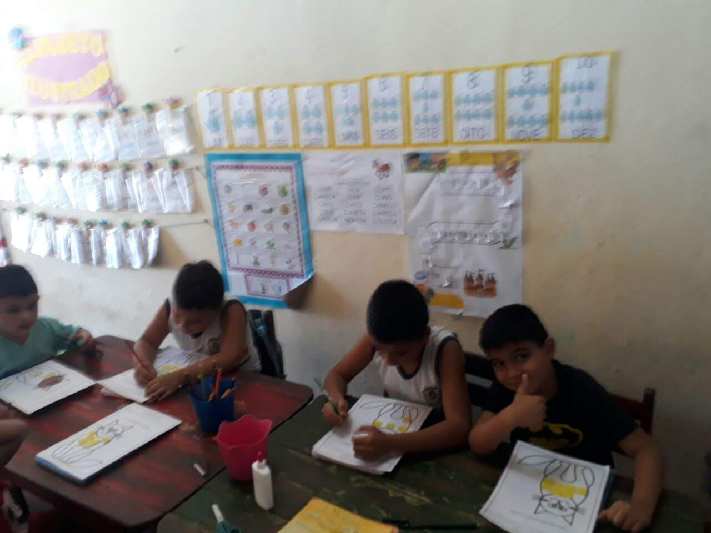
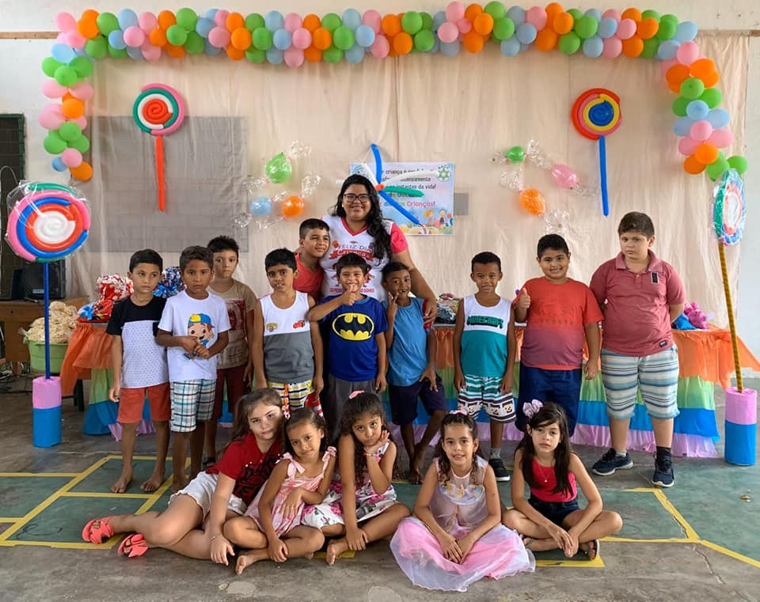
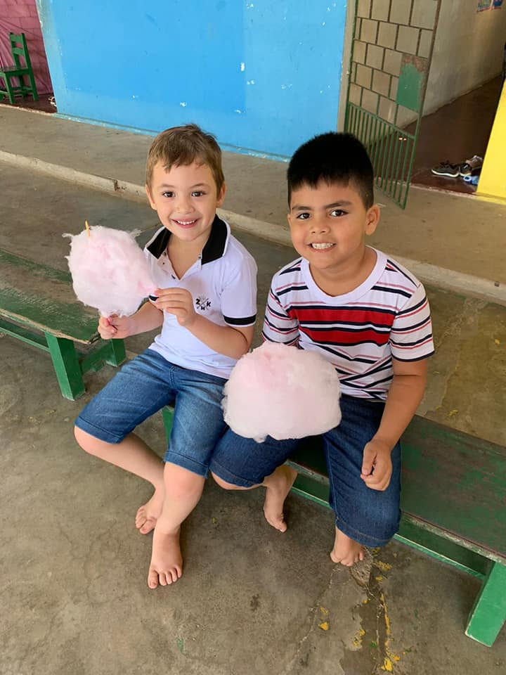
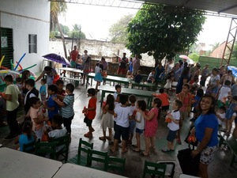
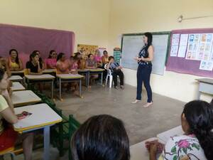
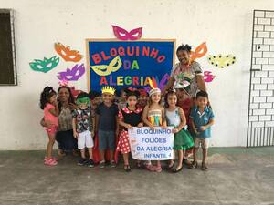
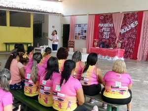
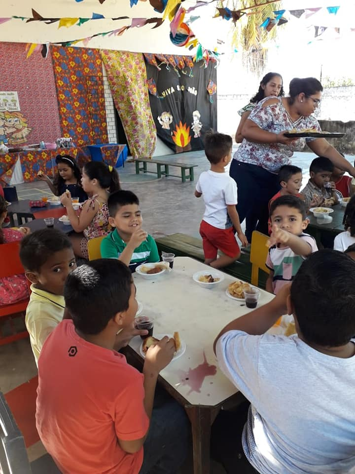
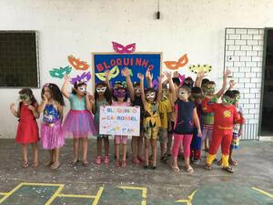

Somos uma entidade sem fins lucrativos que mantém uma escola com atendimento educacional e
alimentação em tempo parcial para quase 70 crianças carentes.
Atuamos com muita dedicação e responsabilidade há mais de 35 anos no município de Pacajus(Ce).
Veja alguns depoimentos de pessoas da nossa ONG!
Estudei nas séries iniciais - educação infantil – e foram anos de muita aprendizagem, alegria e diversão.
Hoje sou graduado em Educação Física e Pedagogia, e tive o prazer de retornar mais uma vez a essa instituição,
como Professor de Educação Física no ano de 2013. Foi muito gratificante poder retribuir, pois de aluno retornei como professor realizando meu trabalho com amor e dedicação,
da mesma forma que fizeram por mim.
- Júnior Aguiar, Ex - aluno e atual professor de Educação Física da ONG
Considero essa instituição a minha segunda casa e eu só tenho gratidão,
pois a base de lá sempre foi amor,
muita dedicação e muita doação.
E todos que passavam por lá sem doavam sem medidas.
Essa história não pode se perder no meio do caminho,
por que lá foram acolhidas todas as famílias que chegaram à busca de assistencialismo e educação,
onde o governo não atendia.
- Maria Luciene Torres da Siva, Ex - professora da ONG
Não consigo passar em frente aquela instituição e não lembrar do meu passado,
da minha vida inteira; tudo que sou hoje é graças ao aprendizado que tive lá e as
pessoas que acreditaram em mim, a Dona Ozanira que sempre me incentivou a estudar,
muitas vezes aconselhando como mãe, não só pra mim, mas pra todos.
Não tenho palavras pra expressar que caibam nesse relato, quão grande é a
importância dela na minha vida .
- Maria Deisielly da Silva Sousa, Ex - aluna da ONG
Meus filhos conheceram um ambiente escolar,
se adaptaram, saíram de lá alfabetizados e sem dificuldade nenhuma nas outras fases escolares,
tudo isso através dessa instituição. Por isso eu reafirmo,
ela pra mim foi e é tudo, por que toda criança da comunidade Banguê I que entra na fase escolar passam
por lá e até hoje eu indico aos pais que coloquem seus filhos pra estudar lá.
- Maria das Graças Freires de Lima, Mãe de ex - alunos da ONG
❮
❯
Quer nos ajudar em nossa missão? Saiba como abaixo!









❰
❱